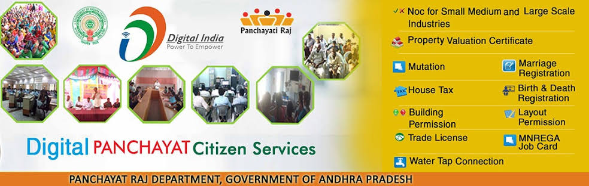
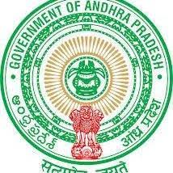

links
Databases
Maps
Documents
Schemes
Panchayat Raj
About us
Home
WELCOME TO E-PANCHAYAT!


Click here to register a complaint
Unit Cost for the Year 2020-2021 is now available
Policy Note 2020-2021
Citizen Chart 2021
Original source
Contents Owned and Updated by
Rural Development & Panchayat Raj Department
Secretariat, Amaravati - 600 009
E-mail :
rdweb[at]tn[dot]nic[dot]in
Designed & Developed by
VIT STUDENTS FOR PROJECT
E-mail :lakshman.naraharisetti2020@vitstudent.ac.in
armimilli.manichand2020@vitstudent.ac.in